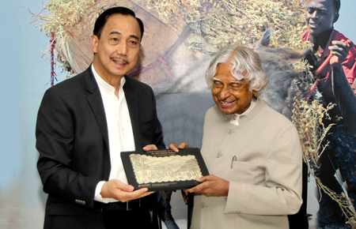

| Year of award or honour | Name of award or honour | Awarding organisation |
| 1981 | Padma Bhushan | Government of India |

| 1990 | Padma Vibhushan | Government of India |
| 1994 | Distinguished Fellow | Institute of Directors (India) |
| 1995 | Honorary Fellow | National Academy of Medical Sciences |
| 1997 | Indira Gandhi Award for National Integration | Indian National Congress |
| 1997 | Bharat Ratna | President of India |
| 1998 | Veer Savarkar Award | Government of India |
| 2000 | Ramanujan Award | Alwars Research Centre, Chennai |
| 2007 | Honorary Doctorate of Science and Technology
| Carnegie Mellon University |
| 2007 | King Charles II Medal | Royal Society, UK |
| 2007 | Honorary Doctorate of Science | University of Wolverhampton, UK |
| 2008 | Doctor of Science | Universiti Sains Malaysia |
| 2008 | Doctor of Engineering (Honoris Causa) | Nanyang Technological University, Singapore |
| 2008 | Doctor of Science (Honoris Causa) | Aligarh Muslim University, Aligarh |
| 2009 | Honorary Doctorate | Oakland University |
| 2009 | Hoover Medal | ASME Foundation, USA |
| 2009 | International von Kármán Wings Award | California Institute of Technology, USA |
| 2010 | Doctor of Engineering | University of Waterloo |
| 2011 | IEEE Honorary Membership | IEEE |
| 2012 | Doctor of Laws (Honoris Causa) | Simon Fraser University |
| 2013 | Von Braun Award | National Space Society |
| 2014 | Honorary professor | Beijing University, China |
| 2014 | Doctor of Science | Edinburgh University, UK |